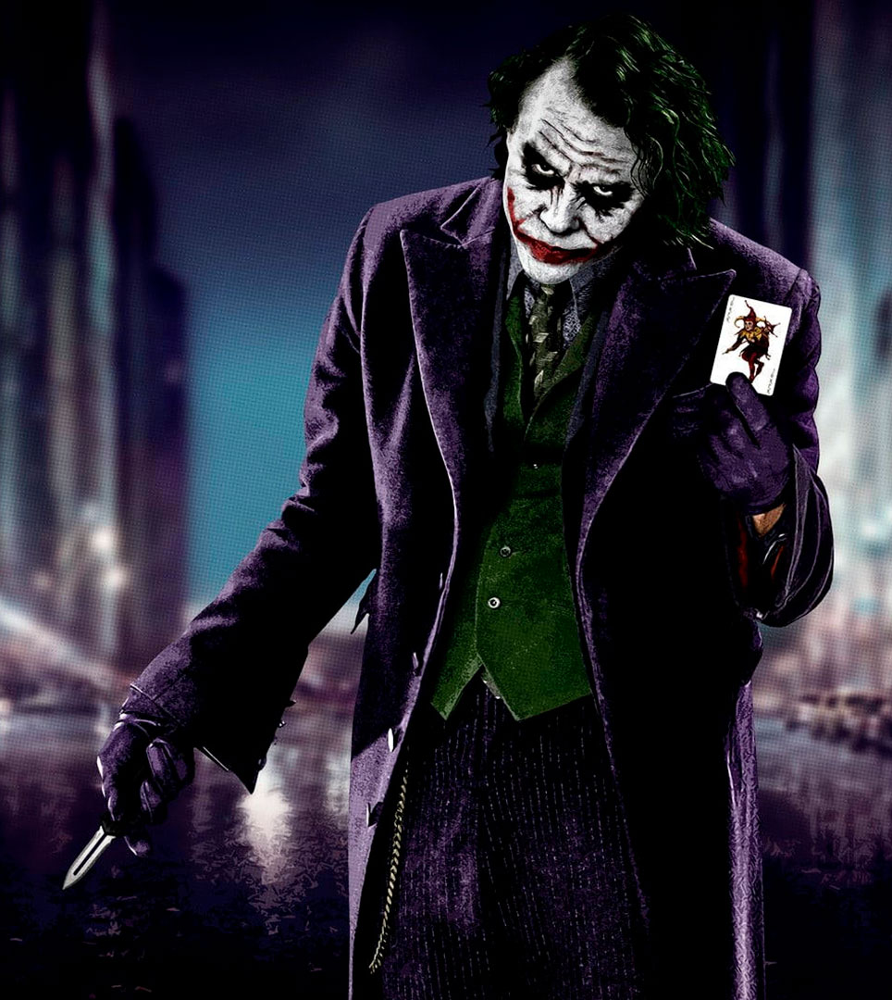

Batman faces the Joker, a ruthless criminal who spreads chaos in Gotham. As the city depends on Batman, Harvey Dent, and Jim Gordon, the Joker’s attacks test Batman’s limits.
The Joker’s schemes push Gotham to the edge, turning Dent into Two-Face. Bruce Wayne struggles between his duty as Batman and his love for Rachel.
In the end, Batman takes the blame for Dent’s crimes, sacrificing his reputation to protect Gotham, proving that true heroism demands great sacrifice.
